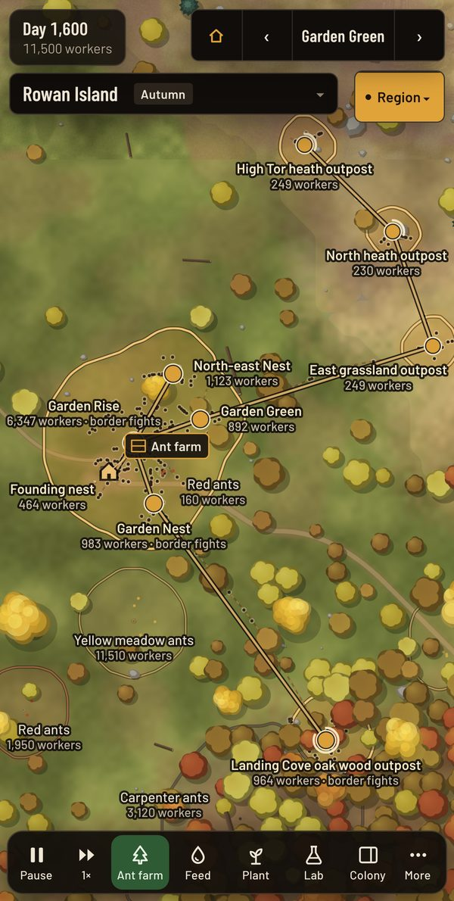
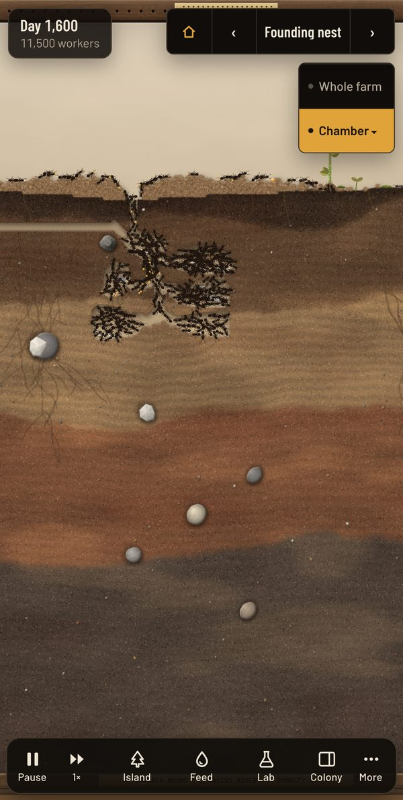
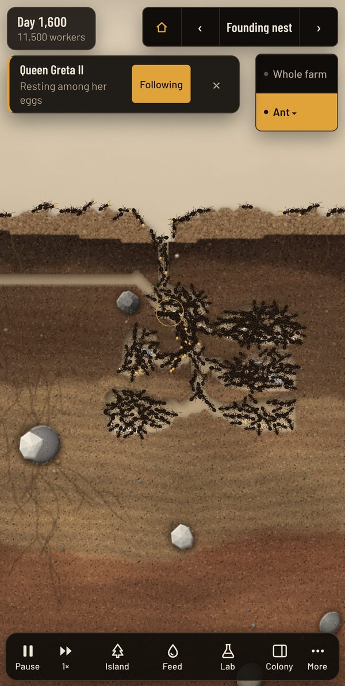
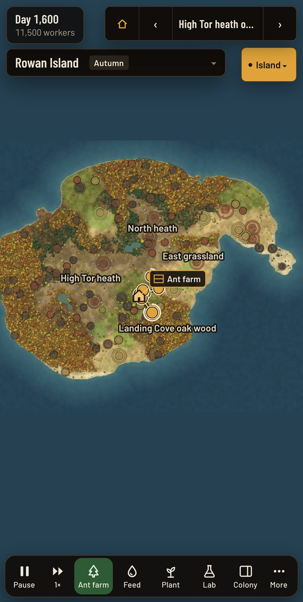
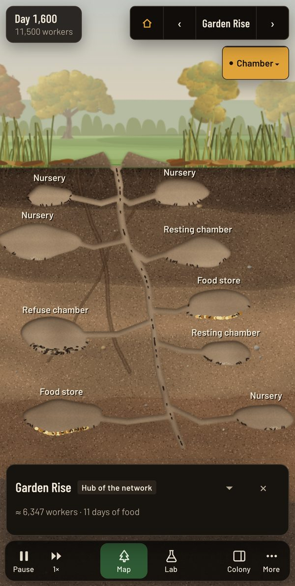
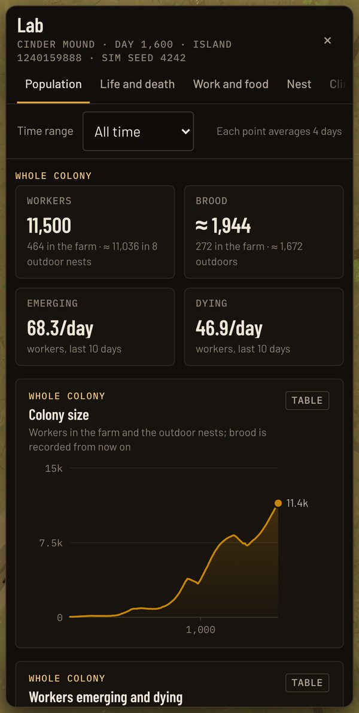
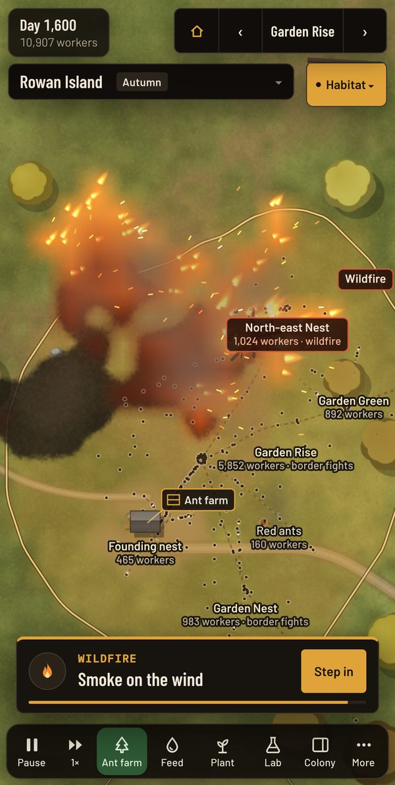
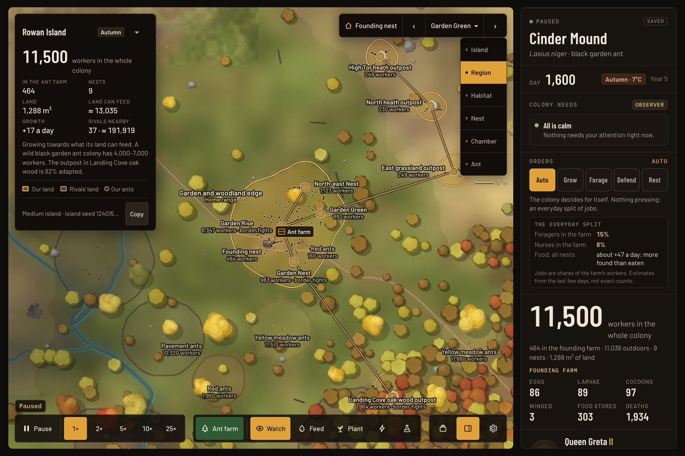

For iPhone and iPad
Raise a living ant colony from a single queen
Release a newly mated queen into a glass ant farm and watch her colony dig, forage and grow, then spill out across an island of its own. Ant Laboratory is a slow, living simulation of an ant colony, and a laboratory to study it in.
US$4.99, paid once. No ads, no accounts, no data collected. Plays offline.



The ant farm
A colony that runs itself
The queen digs in, seals herself away and raises her first tiny workers alone. Then the colony takes over. Nurses feed the larvae, diggers carve tunnels and chambers, foragers lay scent trails to food and carry it home, and undertakers take away the dead.
Every ant in the farm is simulated, with her own age, job and history. Tap one to see what she is doing and why, or touch and hold to follow her through the nest.
The Ant cam
A small camera follows one ant close up and says where she is going, what she carries and why she does her job. It takes turns between the queen and busy workers, or stays with any ant you tap. Tap it to watch her full screen.

The island
Then it spreads across an island of its own
When the farm is full, open the access port and the colony spills out onto the land around the research shelter. Outdoor nests bud off and link up by trails, rival colonies press at the borders, and scouts reach new country: woodland, meadow, heath, dunes and wetland. Each asks something different of the colony, and settling one takes seasons.
A new island for every colony
Each island is grown from a seed: its size and coastline, hills, streams and ponds, woods and open country, the ecosystems in its regions, and the names of its regions and landmarks. Copy the seed from the island's card on the map, and anyone who starts the same species and size with it grows the same island.

Underground
Dive inside any nest
Pinch into a nest on the map and the view dives underground: its chambers, brood and food stores, and the workers moving between them. Each nest is dug to its own plan and grows only as its workers dig.
Rival colonies build in their own ways: thatch mounds, fungus gardens, seed granaries, galleries in wood.
The seasons
The island changes through the year
A year passes in a little over an hour at 1×. The land, the view from the shelter's windows and the sounds all follow it.
Spring
Fresh leaves and new grass, and blossom on the flowering trees. Birds sing a dawn chorus, and resting colonies wake up.
Summer
Deep greens, then dry grass bleaching to straw late in the summer. Crickets sing, and big colonies send out winged queens and males.
Autumn
The leaves turn gold, orange and red, then fall and lie on the ground. Dry leaves rustle, the wind gusts and geese fly over.
Winter
Bare trees. In a cold winter snow settles on the land and the mounds, and the ponds freeze. Most species rest deep in the nest until spring.
Winter follows the island's climate: snow and ice where it is cool, a wet grey winter where it is warm or dry, and none in the tropics.

The Lab
Study it like a scientist
The Lab measures the colony every day: population and brood, births and deaths by cause, lifespans and survival, who does which job, food and diet, soil temperature, ecology, territory and the genome. Once the colony lives outdoors too, each section starts with the whole colony, then shows the founding farm ant by ant. Every chart has a table view, and the data exports as spreadsheet files for your own analysis.
The biology is real where it can be. The rates are sped up so a colony's life fits into hours of play, and anything beyond real biology is marked Experimental.

A wild world
Wildfires, storms, raids and hard choices
Out on the land, thunderstorms flood the low ground, lightning starts wildfires and droughts wither the plants. Wolf spiders hunt at the nest entrances, rival colonies raid, and fungal disease spreads on damp ground. The ant farm stays a clean, closed enclosure: the colony's safe heart.
When raiders or a spider strike one of your outdoor nests, watch the fight from the nest's panel and step in. Rally defenders for a day of the nest's food, or Drive off the spider at the cost of a few stung workers.
Every few weeks something turns up that calls for a choice: a wandering queen, a strange fruit, pirate ants on the march, smoke on the wind. Choose, or let the colony decide. Some choices change its genes.
Play your way
Watch it, or keep it
Observer
Relax and watch. The feeder keeps the colony fed, and it makes its own decisions.
Hive Mind
Feed it, scout its neighbours, make its choices and chase optional goals. Switch any time; nothing resets.
Give orders
Grow, Forage, Defend or Rest, each at a cost. Or leave it on Auto: the colony decides for itself and says why.
Your pace
At 1× a colony day passes in 12 seconds; go up to 25× faster, or pause. When you leave, it waits right where you left it.
Sounds, not music
Wind in the trees, birds that change with the seasons, rain, shifting soil and scraping ants, made by the game as it plays. Bring your own music.
Many colonies
Start as many as you like, each on its own island, and switch between them. Export one to keep or share. Delete one, and a recovery copy stays in case you change your mind.
Six real species
Each with its own nest, diet and habits
- Black garden antLasius nigerFarms aphids for honeydew at a garden's edge.
- Wood antFormica rufaBuilds a warm dome of pine needles and keeps many queens.
- Leafcutter antAtta sexdensCuts leaves to grow a fungus garden, from tiny gardeners to big soldiers.
- Carpenter antCamponotus pennsylvanicusCarves its galleries in rotting wood; big, slow and patient.
- Harvester antPogonomyrmex barbatusGathers seeds into granaries on dry grassland.
- Fire antSolenopsis invictaSmall, fierce and fast-growing; in a flood the workers form rafts.
On iPad
More room for the whole colony
On a bigger screen the colony's numbers, needs and queen sit beside the world when you hold it sideways, and slide in from the edge when you hold it upright.

Pay once. It's yours.
No ads, no in-app purchases, no accounts and no tracking. Ant Laboratory works offline and keeps your colonies on your device.
For iPhone and iPad with iOS 15 or later.